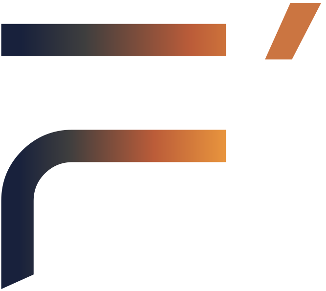

Create Health Monitoring Software for Astronauts on Space Missions
Nicolás Moreno · Benjamín Campos · Nicolás Richardson · Luis González · Ambar Martínez · Daniella Mora
F Prime v4.4.2 · NASA JPL · Apache 2.0, el marco que voló el helicóptero Ingenuity
En un viaje a Marte, una consulta con el cirujano de vuelo tarda entre 6 y 44 minutos ida y vuelta, y durante la conjunción solar el enlace se corta por semanas. NOVA hace el monitoreo, la detección y la primera respuesta dentro de la nave. Los signos vitales pasan por un núcleo hecho con F Prime; la tripulación los ve en una pantalla grande y en su teléfono; un asistente local responde con datos reales y fuentes médicas abiertas. La Tierra recibe un informe cada noche y devuelve mejoras firmadas, siempre con el retraso real de la luz.
Ninguna función crítica depende de la nube ni de la Tierra. Los modelos, la biblioteca y la voz corren en el mismo computador de la nave.
Los umbrales viven en el núcleo de vuelo y los pasos de emergencia salen de un archivo revisable. El modelo explica y acompaña; no decide.
Cada tripulante elige qué comparte. El ánimo sale del teléfono solo si comparte su día; lo que escribe nunca sale.
03 Vista general del sistema
08 Emergencias y escáner del cuerpo
04 El recorrido de un dato
09 El teléfono de cada tripulante
05 Núcleo de vuelo F Prime
10 Salud de las mujeres y ejercicio
06 El enlace de la nave
11 El ciclo con la Tierra
07 Inteligencia a bordo
12 Seguridad y estado · 13 Puertos
Tripulación ficticia en todo el documento: Mara Reyes, David Okafor, Ingrid Lindqvist y Kenji Tanaka. Los datos de demostración salen de un simulador con variabilidad real de PhysioNet BIDMC (ODC-By).
El borde punteado turquesa es el casco: todo lo que está adentro funciona sin la Tierra. Lo único que cruza es un enlace lento, con el retraso de la luz, que baja un informe y sube paquetes firmados.
Un caso real de la demo: el simulador aplica el escenario «desmayo» y el pulso de Ingrid cae a 34 latidos por minuto. Así pasa ese valor por cada pieza, de arriba hacia abajo en el tiempo.
Lectura · 1 Hz. Un mensaje por medición con tripulante, sensor, valor, unidad y calidad de 0 a 1. Máximo 1 KB.
Clasificación. Rango plausible por sensor; una calidad bajo 0,5 no alerta. Subir de nivel es inmediato; bajar exige 10 s seguidos.
Silencio · 120 s. Si un sensor que ya reportó deja de hablar, el núcleo emite SIN_DATOS.
Estado · 1 Hz. 4 tripulantes × 18 sensores con valor, nivel y edad; cada alerta sale al instante.
Pantallas. NOVA PC recibe el flujo continuo; los teléfonos leen /v1/estado cada 5 s.
Tierra. El informe baja con el retraso de la luz; los comandos suben por una cola con su hora de llegada calculada.

F Prime es el marco de software de vuelo del JPL, abierto con licencia Apache 2.0. NOVA lo trae como submódulo en vuelo/lib/fprime y agrega su propio despliegue, Nova/Nave: los subsistemas estándar más cuatro componentes propios, unidos por puertos tipados.
| Componente | Qué hace | Entradas y salidas |
|---|---|---|
| Estacion | Lee la estación médica en cada ciclo sin bloquear y descarta JSON inválido con el evento MENSAJE_INVALIDO. | UDP 50050 a Nova.Signo |
| MonitorSalud | Clasifica cada lectura contra el umbral de atención y el de aviso a la Tierra. Avisa si un sensor calla 120 s. | 31 parámetros en prmDb · WARNING_HI/LO |
| Pantalla | Publica el estado completo de la tripulación a 1 Hz y cada alerta al instante. | UDP 50051 · 50052 |
| Salud | Tipos compartidos: sensores, niveles y el signo vital como estructura. | FPP |
1 Hz para leer y clasificar; 0,5 y 0,25 Hz para los recursos y la salud del propio sistema.
Los umbrales cambian por comando del diccionario, se guardan en prmDb y sobreviven a un reinicio.
fprime-gds con la interfaz de NOVA: eventos, telemetría y comandos traducidos con los diccionarios del despliegue.
NOVA PC es una aplicación de escritorio hecha con Tauri. Su parte en Rust (axum + tokio) recibe al núcleo, guarda la historia, corre los servicios de a bordo y sirve una sola API a la pantalla grande, a los teléfonos y al escáner. El escáner necesita HTTPS porque el navegador solo da la cámara a páginas seguras; por eso el enlace levanta además :8751 con un certificado propio.
| Para qué | Rutas | Quién la usa |
|---|---|---|
| Estado en vivo | /v1/flujo (SSE) · /v1/estado · /v1/salud · /v1/mision | Estación, teléfonos, escáner |
| Lo que entra | /v1/lote (teléfonos) · /v1/ingreso (medición a mano) · /v1/escenario (demo) | App, estación, simulador |
| Historia | /v1/historia · /v1/resumen | Vitals, Body twin, pronóstico |
| Preguntar a NOVA | /v1/preguntar · /v1/modelo · /v1/oir · /v1/decir · /v1/opinion | Ask Nova, voz, calificaciones |
| Biblioteca y kit | /v1/biblioteca · /buscar · /pdf · /v1/kit · /buscar · /uso · /ajuste | Library, Kit, emergencias |
| Emergencias | /v1/bitacora · /v1/privado | Guía, cirujano de vuelo |
| Escáner | /v1/escaner/cuadro · /flujo · /visores · /v1/vision/ws | Teléfono, visor, estación |
| Casa | /v1/casa · /archivo · /respuesta · /subida · /bajada | Mensajes de la familia |
| Sistemas y Tierra | /v1/sistemas · /comando · /v1/tierra/informe · /estado · /actualizar · /v1/aprende | Systems, consola de Tierra |
La pantalla siempre dice qué cerebro está activo: «onboard · no internet» o «demo brain». La arquitectura de vuelo es la de a bordo; la demo existe para mostrar el sistema con un modelo más grande y no se confunde con ella.
NOVA responde con lo que la nave sabe en ese momento: signos, prioridades y cruces calculados por el núcleo, más los pasajes de la biblioteca médica. El modelo explica y acompaña; los umbrales y los pasos de emergencia no dependen de él.
| Pieza | Modelo | Para qué | Estado |
|---|---|---|---|
| Lenguaje | Qwen3 4B Instruct · llama.cpp | Responde, explica y arma el informe. Tope de 5 frases (7 en listas). | en uso |
| Búsqueda | nomic-embed-text v2 MoE | Encuentra el pasaje y abre la página real del libro con pdf.js local. | en uso |
| Oído | whisper.cpp | Entiende lo que dice la tripulación; el audio no sale de la nave. | en uso |
| Voz | Kokoro (af_heart · ef_dora) | Lee cada paso en voz alta, en inglés y en español. | en uso |
| Visión | MediaPipe Pose heavy + Hands | Cuerpo y manos en la GPU del computador, unos 15 ms por cuadro. | en uso |
| Pronóstico | tendencia con cono de 2 desviaciones | Dónde va cada signo, la probabilidad de cruzar un umbral y el «cambio inesperado». | en uso |
Gray's Anatomy (1918), OpenStax Anatomy & Physiology, enfermería y farmacología, el Medical Checklist del transbordador, el kit médico de la ISS, TCCC 2026 y los manuales mhGAP de la OMS. Libros con copyright, no. 35.830 pasajes buscables sin internet.
42 insumos en 6 cajones, cada uno con su foto. «¿Dónde está el desfibrilador?» enciende el cajón A y NOVA lo dice en voz alta. Para cada insumo se calcula si alcanza hasta volver a la Tierra con el ritmo de uso real.
Los 12 protocolos son un grafo de pasos con su fuente y su página: preguntas, acciones y esperas que deciden el paso siguiente con los signos reales del tripulante. NOVA lee cada paso, lleva el metrónomo y deja la bitácora. Con el teléfono, los pasos se dibujan sobre el cuerpo.
BodyParts3D y HuBMAP (CC BY 4.0). Esqueleto completo y órganos animados por el gemelo: el latido sigue al pulso real.
El punto de RCP, el muslo para la epinefrina o los parches del desfibrilador, dibujados sobre la persona.
DGLRM/ESAM para RCP en microgravedad (Hinkelbein 2020). Marte: Sriharan 2021 y Overbeek 2022.
Paro cardíaco
Desmayo (síncope)
Hipoglucemia
Fiebre
Oxígeno bajo
CO2 alto en cabina
Sueño y ánimo
Anafilaxia
Atragantamiento
Hemorragia
Convulsión
Descompresión
Cada paso guarda su fuente y su página, y la versión del protocolo está pendiente de revisión por un cirujano de vuelo. Diez de ellos tienen pasos en AR; los doce funcionan en el teléfono sin la nave.
La app NOVA (Expo, React Native) tiene un modo misión que se conecta a la nave por su red local, sin pasar por internet ni por la Tierra. Habla con el mismo contrato de datos que la estación médica, así que para el núcleo un teléfono es otra estación más.
| Qué viaja | Cada cuánto | Regla |
|---|---|---|
| Pulso y VFC del reloj, SpO2, pasos, luz y ruido | 5 s · POST /v1/lote | Solo números. |
| Sueño de anoche y pulso en reposo | cada minuto, si cambió | Solo números. |
| Ánimo y energía del check-in | cada minuto, si cambió | Solo con «Compartir mi día». Lo escrito no sale del teléfono. |
| Estado de la tripulación | 5 s · GET /v1/estado | Para Today, Crew y la tarjeta «La nave». |
| Emergencia | al tocar | Guía con voz y metrónomo háptico; bitácora a la nave. |
| Escáner del cuerpo | al tocar | Abre por HTTPS con el tripulante ya elegido. |
| Mensajes de casa | con el retraso de la luz | Fotos y mensajes de la familia, también en el widget. |
El día de cada uno: corazón, oxígeno de la nave, sueño, dosis de la misión, Emergencia y Escáner del cuerpo.
La tripulación en vivo desde la nave, con lo que cada persona comparte desde su teléfono y «Ayudar a…».
El registro del día y la constelación de ánimo, estrés y concentración a partir de los check-ins.
El check-in de un minuto, con un toque o con la voz. El diario es privado y vive en el teléfono.
«¿Quién necesita ayuda?» y «¿Qué pasa?»: abre el protocolo aprobado, que funciona sin la nave.
Lo que manda la familia, que llega con el retraso real de la luz, también en el widget de Android.
Cerca de la mitad de los nuevos candidatos a astronauta de la NASA son mujeres, pero la mayoría de los datos de vuelo todavía viene de hombres. NOVA sigue lo que la NASA ha aprendido y deja lo más privado en el teléfono de cada astronauta: nada del ciclo llega a la pantalla de la tripulación.
| Tema | Lo que sabe la NASA | Lo que hace NOVA |
|---|---|---|
| Coágulos | La sangre se enlentece en la yugular en cerca de la mitad de la tripulación. Se halló un trombo en una astronauta con anticonceptivo combinado. Hoy se hace ecografía a todos. | Recuerda la ecografía, marca los métodos con estrógeno y trata cuello, pierna o pecho como urgentes. |
| Menstruación | Muchas astronautas la suprimen por la higiene y los residuos; el agua de la estación se recicla de la orina. | Seguimiento o supresión privada, recordatorio de la píldora y bolsa de contención. |
| Insumos | Una misión de tres años exige unas 1.100 píldoras, sin pruebas de estabilidad en radiación profunda. | Cuenta píldoras y toallas contra los días que quedan. |
| Anemia y orina | El sangrado irregular puede llevar a anemia; la salud urinaria tiene su informe técnico. | Avisa con sangrado abundante y poca energía, o con ardor al orinar. |
| Regreso | El mareo al ponerse de pie después del vuelo es más frecuente en mujeres. | A 30 días del aterrizaje: prueba de pie, líquidos y compresión. |
| Radiación | Un límite único de 600 mSv, fijado para el caso más sensible: una mujer al inicio de su carrera. | Cuenta cada dosis contra 600 mSv. |
Fuentes: NASA OCHMO-MTB-007 (2026) · Marshall-Goebel et al., JAMA Netw Open 2019 · Jain & Wotring, npj Microgravity 2016 · npj Microgravity 2025 · Frontiers in Physiology 2025 · NASA OCHMO-MTB-003 · NASA-STD-3001.
El gemelo del cuerpo proyecta a cada tripulante con y sin su plan de ejercicio, así que saltarse una sesión tiene un costo visible. Con el ARED, mujeres y hombres protegen el hueso por igual (Smith et al., JBMR 2014).
Día 219 de una misión de demostración. Tasas del Human Research Program de la NASA y OCHMO-MTB-013 (2026).
Cada noche baja lo que NOVA necesita mejorar: preguntas que la biblioteca no cubrió, respuestas que la tripulación marcó como poco útiles y alertas que duraron segundos. En la Tierra se revisa y vuelve como paquete firmado. Los protocolos de emergencia no cambian por esta vía.
| Capa | Qué es | Estado |
|---|---|---|
| F Prime | Núcleo de vuelo del JPL: comandos, eventos, telemetría y parámetros. | en uso |
| CCSDS | Tramas y paquetes espaciales entre el núcleo y el GDS. | en uso |
| ed25519 | Paquetes firmados en la Tierra y verificados a bordo; uno alterado se rechaza y se registra. | en uso |
| Retraso de la luz | Calculado con la órbita de Hohmann de la misión; cada comando espera su hora de llegada. | en uso |
| Padre a hijo | Hoy la Tierra devuelve notas y respuestas corregidas; la destilación de un modelo nuevo es el diseño. | parcial |
| DTN · Bundle Protocol | Red tolerante al retraso, la que la NASA ya usa en la ISS. | siguiente |
| Deep Space Network | Las antenas de la NASA para el espacio profundo. | siguiente |
Firma ed25519 con la clave privada solo en la Tierra, verificación a bordo y vuelta atrás. Hoy la nave acepta únicamente comandos del diccionario.
Los pasos salen de protocolos.json con fuente y página. El modelo no decide umbrales ni pasos y responde con un tope de largo.
Rangos plausibles, calidad mínima de 0,5, SIN_DATOS a los 120 s y aviso si la estación no da señal de vida en 15 s.
El diario y lo escrito no salen del teléfono. Los signos van al cirujano; el ánimo, solo si la persona comparte su día.
| Pieza | Detalle | Estado |
|---|---|---|
| Núcleo F Prime | 4 componentes propios, umbrales como parámetros, GDS y vista Systems. | hecho |
| NOVA PC | Crew, Vitals con pronóstico, Body twin 3D, Mind, Kit, Library, Systems y Ask Nova por voz. | hecho |
| App en modo misión | Today, Crew, Body, Mind, Log, Emergency, From home y widget. | hecho |
| Escáner AR | Visión dividida, esqueleto completo, holograma por sistemas, 10 protocolos en AR y QCPR. | hecho |
| Ciclo con la Tierra | Informe, consola de Tierra, cola con retraso y paquetes firmados. | hecho |
| Mujeres y ejercicio | Ciclo privado, ecografía yugular, señales urgentes, regreso y gemelo con y sin ejercicio. | hecho |
| Estación médica física | Contrato v1 listo (USB serie o UDP); falta conectar la placa. | en curso |
| Evaluación clínica | Los 3 casos OSCE de CMO-DA (NASA y Google) con la consulta completa. | siguiente |
| Lentes AR | WebXR en Android XR o lentes con pantalla; hoy la AR va en el teléfono. | siguiente |
| Puerto | Protocolo | Quién | Para qué |
|---|---|---|---|
| 50050 | UDP | estación a Estacion | Mediciones NDJSON (contrato v1) |
| 50051 · 50052 | UDP | Pantalla y enlace | Estado de la tripulación y alertas |
| 50000 | TCP | núcleo y fprime-gds | Tramas CCSDS: telemetría, eventos, comandos |
| 8750 · 8751 | HTTP · HTTPS | enlace de la nave | API /v1, SSE y el escáner (la cámara exige HTTPS) |
| 8081 · 8084 | HTTP | llama-server | Lenguaje y embeddings |
| 8083 · 8082 | HTTP | whisper · Kokoro | Oír y hablar |
| 8792 | WebSocket local | visión | MediaPipe en la GPU, por el puente /v1/vision/ws |
F Prime. Marco de software de vuelo del JPL de la NASA, en C++, abierto con licencia Apache 2.0.
CCSDS. Estándar internacional de comunicaciones espaciales; define tramas y paquetes.
GDS. Sistema de tierra de F Prime: muestra telemetría y eventos y envía comandos.
NDJSON. Un objeto JSON por línea; así habla la estación médica con el núcleo.
SSE. Server-Sent Events: el enlace empuja el estado a las pantallas sin que pregunten.
ed25519. Firma digital de curva elíptica; la nave guarda solo la clave pública.
Destilación. Un modelo grande (padre) enseña a uno chico (hijo) que cabe en la nave.
DTN. Delay-Tolerant Networking: red que guarda y reenvía cuando el enlace vuelve.
QCPR. Indicadores de calidad de la RCP: ritmo, profundidad y fracción de compresión.
Evetts-Russomano. Técnica de RCP en microgravedad, con las piernas sobre los hombros del paciente.
Salud que viaja contigo.
B&N Team · NASA Space Apps Challenge 2026 · Santiago, Chile
Núcleo construido sobre F Prime · NASA JPL · Apache 2.0